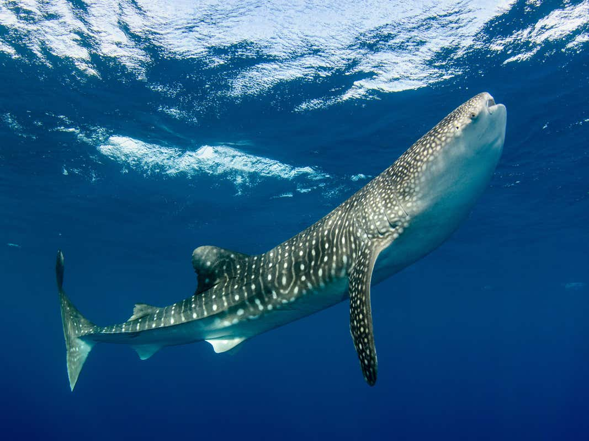
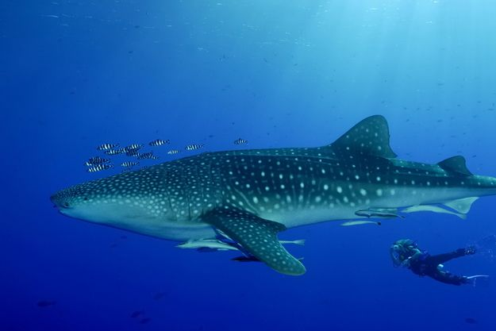

Whale Shark
Always spotted but rarely seen, meet the largest fish in the ocean.

Kingdom
Animalia
Phylum
Chordata
Class
Chondrichthyes
Order
Orectolobiformes
Family
Rhincodontidae
Genus
Rhincodon
Description
The Whale Shark is the world’s largest living fish, growing up to 12 metres long. These large fish have five sets of gills and a set of dorsal fins that form a dual-lobbed caudal fin. Inside their roughly 1.5m-wide mouths, they have over 300 rows of teeth.
Habitat and Diet
Though Whale Sharks have several hundred teeth, they don’t use them to eat. Instead, these fish are filter feeders, swimming forward to swallow prey. They are carnivorous, eating krill, crab and fish larvae, small schooling fish, and jellyfish. Humans are not on the menu.
Whale Sharks live in all warm and tropical seas, are migratory, and swim more than 1,000 metres below the surface. Feeding aggregations occur seasonally at several locations, including Ningaloo Reef.
Intelligence
Whale Sharks are docile creatures, often allowing humans to swim around them. Some younger Whale Sharks have been observed to play with divers and are otherwise gentle.
Whale Shark facts
1.
Whale Sharks can live up to 100 years.2.
Whale Sharks will often “cough” to clear particles from their filter pads.3.
Whale Sharks are covered in a pattern of spots that is unique to each shark, much like human fingerprints.4.
A whale shark’s mouth is about 1.5 m wide. Inside, they have rows of over 300 teeth, but they don’t use these teeth to eat because they’re filter feeders.5.
While they are meat-loving carnivores, whale sharks do not attack humans.6.
Whale sharks eat krill, crab and fish larvae, small schooling fish and jellyfish.7.
The whale shark is ovoviparous, meaning the female produces eggs that hatch insider her.8.
When the young are fully developed, the female gives birth to around 300 live young.Behaviour and Reproduction
Whale Sharks do give birth to live young, but not in the way you're thinking. The Whale Shark is oviparous, meaning the female sharks produce eggs that are hatched inside of her. These eggs are not all born at once, but are born in a steady stream over a certain period.
Able to birth around 300 young, Whale Sharks reach sexual maturity at 30 years and live to a total of around 70 to 100 years.
Threats
The Whale Shark population is at risk. Vessel strikes and being caught accidentally by commercial fishing vessels has led the Whale Shark to be considered a vulnerable species.